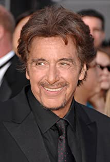
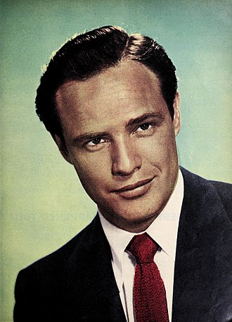

Cast members
Al Pacino
Michael Corleone
Alfredo James "Al" 'Pacino established himself as a film actor during one of cinema's most vibrant decades, the 1970s, and has become an enduring and iconic figure in the world of American movies.
His role as a heroin addict in The Panic in Needle Park (1971) brought Pacino to the attention of director Francis Ford Coppola, who cast him as Michael Corleone in what became a blockbuster Mafia film, The Godfather (1972).Although Jack Nicholson, Robert Redford, Warren Beatty, and the little-known Robert De Niro were tried out for the part, Coppola selected Pacino, to the dismay of studio executives who wanted someone better known. Pacino's performance earned him an Academy Award nomination, and offered a prime example of his early acting style. This was described by Halliwell's Film Guide as "intense" and "tightly clenched". Pacino boycotted the Academy Award ceremony, insulted at being nominated for the Supporting Acting award, as he noted that he had more screen time than co-star and Best Actor winner Marlon Brando—who also boycotted the awards, but for unrelated reasons.
Cast members
Vito Corleone
Marlon Brando
Marlon Brando Jr. (April 3, 1924 – July 1, 2004) was an American actor and film director with a career spanning 60 years, during which he won the Oscar for Best Actor twice.
He is well-regarded for his cultural influence on 20th-century film. Brando was also an activist for many causes, notably the civil rights movement and various Native American movements. Having studied with Stella Adler in the 1940s, he is credited with being one of the first actors to bring the Stanislavski system of acting and method acting, derived from the Stanislavski system, to mainstream audiences.